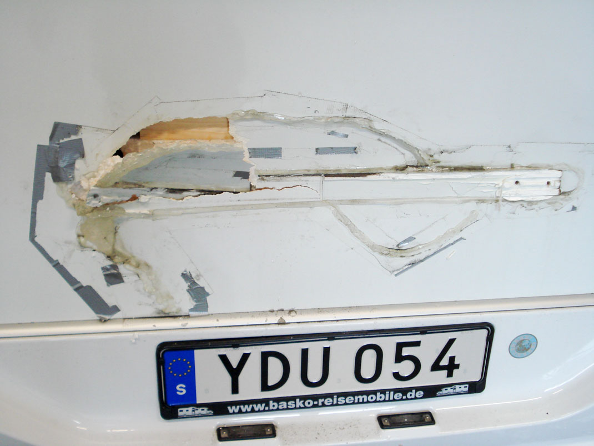
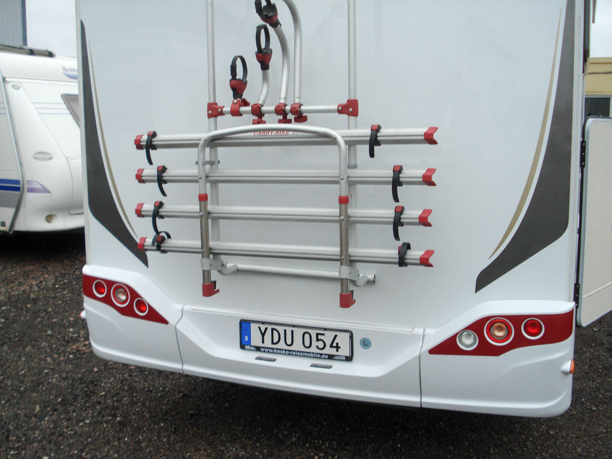
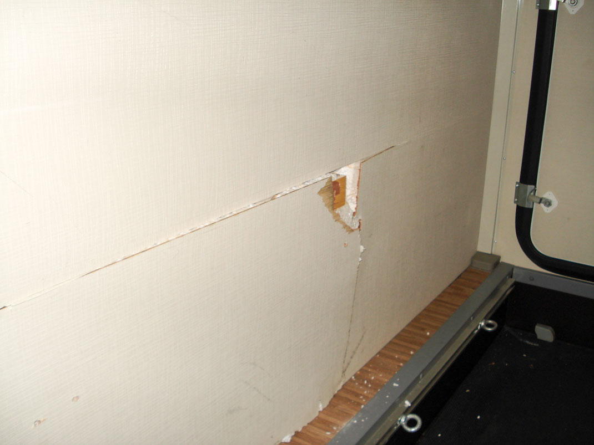
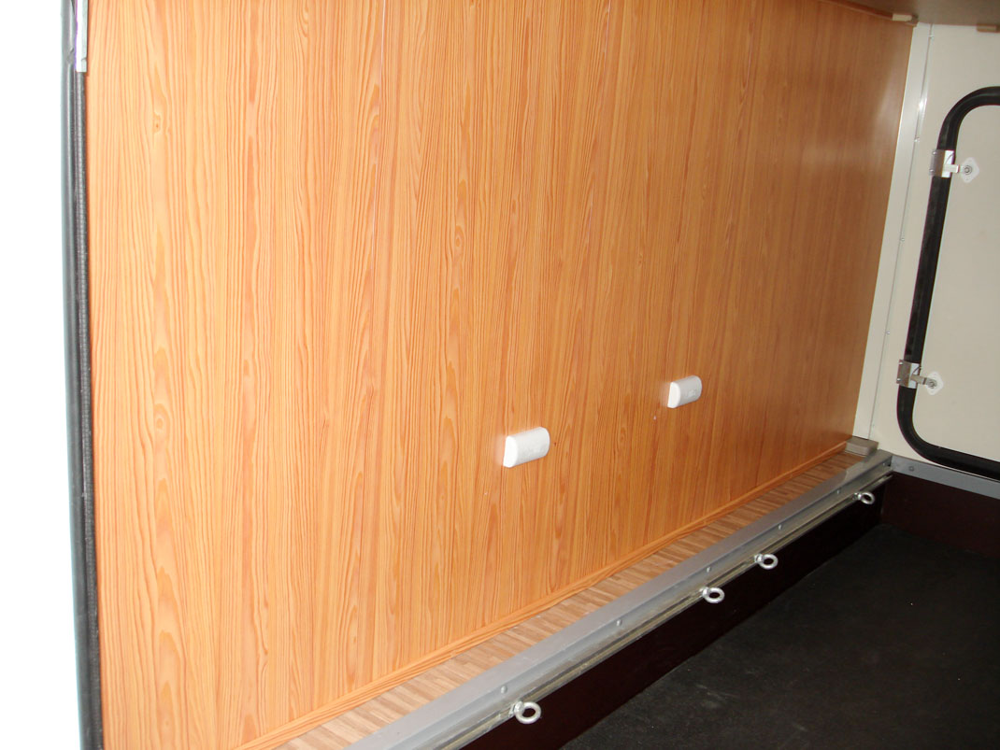

Reparation av bakgavel invändigt och utvändigt efter backskada
Det är lätt att missa att det ibland sticker ut saker nära målet när man backar.
Tanken var att hela bakgaveln behövde bytas ut, men med rätt kompetens så blev reparation betydligt mer kostnadseffektivt.
Slutresultatet syns på bilderna nedan.
Kunden var mycket nöjd med resultat och pris.
Innan reparation utvändigt, med backskada:

Slutresultatet utvändigt

Innan reparation invändigt, med backskada:

Slutresultatet, invändigt:
